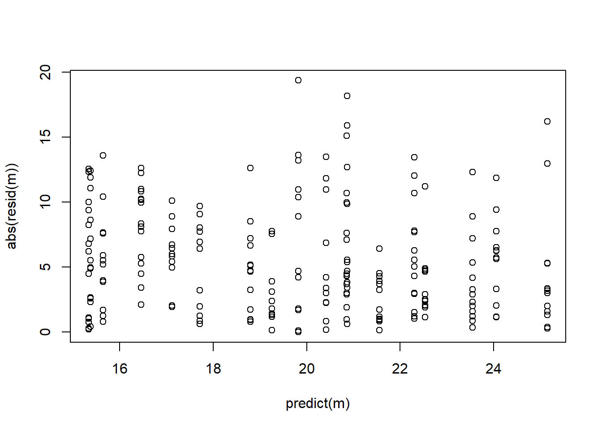
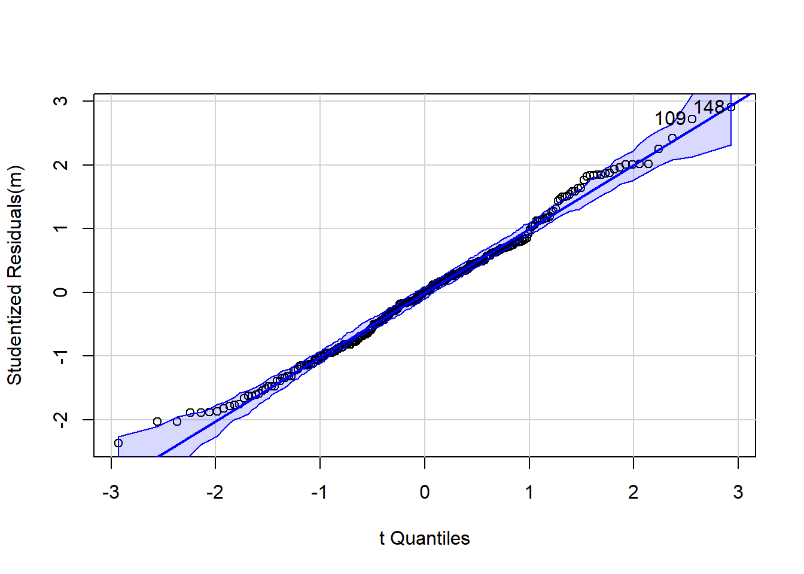
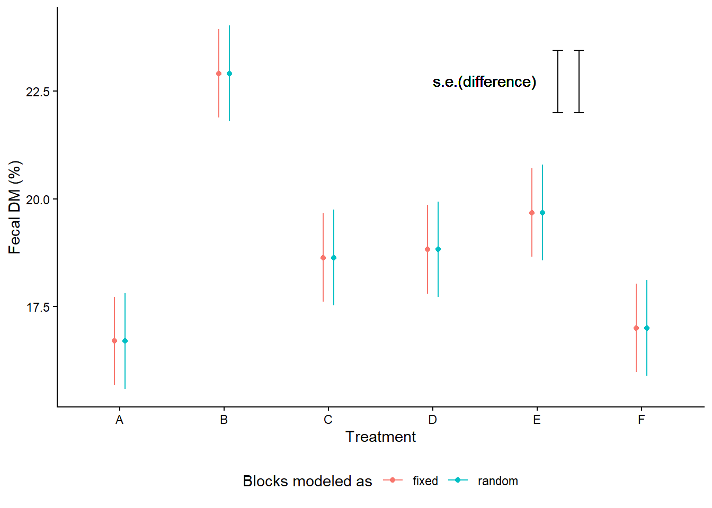

Day 4 Linear mixed models
September 8th
4.1 Announcements
- Assignment 1 grades are posted. Remember that you have one chance to resubmit for full points.
- Assignment 2 is due on Wednesday.
- Last chance to join the mixed models workshop this weekend.
Semester project:
- Proposal due September 24th – see example 1 | see example 2
- Must contain: Background, Objectives.
- Data for the project must be ready to go.
- Final product: Manuscript + Tutorial.
- Working in teams vs. solo.
- Start as soon as possible!
This week
- Today: intro to mixed models + blocks modeling discussion
- Wednesday: mixed models applied to the fungicide experiment + Kahoot
4.2 Statistical models
Statistical models can be typically defined as the combination of a deterministic component (e.g., the linear predictor), and a random component (e.g., the distribution of the data).
Learn more about this way of describing statistical models in Stroup et al. (2024) page 4 (and all of Chapter 1 in general).
4.3 The general linear model
The general linear model is one of the most commonly used statistical models. We call it “general” because it assumes that the data arise from a normal distribution. [Note: Do not mix up “general” (normal distribution) with “generalized” (multiple possible distributions).] We call it “linear” because the parameters enter the model linearly. For example, the predictor \(\beta_0 +\beta_1 x + \beta_2 x^2\) corresponds to a linear model, because the parameters enter linearly. The predictor \(\alpha \exp(\beta x)\) corresponds to a nonlinear model, because the parameters enter as the power of the data.
The general linear model can be written as \[\mathbf{y} = \mathbf{X}\boldsymbol{\beta} + \boldsymbol\varepsilon, \\ \boldsymbol{\varepsilon}\sim N(\boldsymbol{0}, \mathbf{\Sigma}),\] where \(\mathbf{y}\) is the vector of the data, \(\mathbf{X}\) is the matrix containing the data, \(\boldsymbol{\beta}\) is a vector containing all parameters, \(\boldsymbol\varepsilon\) is a vector containing the residuals (i.e., the difference between observed and predicted). Note that \(\boldsymbol\varepsilon\) arises from a multivariate normal distribution, with mean zero and a variance-covariance matrix \(\mathbf{\Sigma} = \sigma^2 \mathbf{I}\).
Recall some cool properties:
- The least squares estimate of \(\beta\), \(\hat{\boldsymbol{\beta}} = (\mathbf{X}^T\mathbf{X})^{-1}\mathbf{X}^T\mathbf{y}\), is also the the MLE, is unbiased.
- \(\hat\sigma^2 = \frac{SSE}{df_e}\), not the MLE, is the unbiased estimate of \(\sigma^2\).
- \(CI(\hat\mu_{ij}) = \hat\mu_{ij} \pm t_{df, \frac{\alpha}{2}} \cdot se(\hat{\mu}_{ij})\), where \(\sigma^2_e\) is the residual variance, and \(r\) is the number of repetitions.
- Under a CRD, \(se(\mu_{ij}) = \sqrt{\frac{\sigma^2_e}{r}}\), where \(\sigma^2_e\) is the residual variance, and \(r\) is the number of repetitions.
- ANOVA tables help us distinguish the most important sources of variability in the data. See Gelman (2005)
- Essentially, an analysis of variance (ANOVA) divides the predictors into bins and analyzes whether each bin is relevant to explain variability in the data.
- Typically, ANOVA tables show the sources of variation, their degrees of freedom, an F statistic and, sometimes, a p-value.
- Sources of variation may come from treatment factors, or elements of the design.
- Degrees of freedom tells us how many independent variables there are.
- The F statistic serves as a multivariate t statistic, since it is used to test multiple predictors.
4.3.1 Applied example
Swine nutritionists are studying the effect of dietary treatments on the % of fecal dry matter, and whether said effects change at different points in time.
In this experiment, 450 pigs were allocated in pens of 5 pigs.
Each pen is independently assigned with dietary treatment.
There are 6 dietary treatments: negative C, positive C, and 4 different pre-commercial additives.
So, there are 45 pens per treatment.
One (randomly selected) pig per pen was observed at 3 points in time.
- What is the experimental unit?
- What is the observational unit?
- What is the treatment structure?
- What is the design structure?
A reasonable model could be
\[y_{ijk} \sim N(\mu_{ijk}, \sigma^2),\]
\[\mu_{ijk} = \eta_{ijk},\] \[\eta_{ijk} = \eta_0 + D_i + T_j + (DT)_{ij},\]
where:
- \(y_{ijk}\) is the observed dry matter (%) for the \(i\)th dietary treatment, \(j\)th time, and \(k\)th repetition,
- \(\mu_{ijk}\) is the expected value for the \(i\)th dietary treatment, \(j\)th time, and \(k\)th repetition,
- \(\sigma^2\) is the residual variance,
- \(\eta_{ijk}\), the linear predictor is equivalent to the expected value because the link function is the identity function,
- \(\eta_0\) is the overall mean of the linear predictor,
- \(F_i\) is the effect of the \(i\)th dietary treatment,
- \(G_j\) is the effect of the \(j\)th time,
- \((FG)_{ij}\) is the interaction for the \(i\)th dietary treatment and \(j\)th time
A reasonable ANOVA shell could be:
| Source | df |
|---|---|
| Diet | d-1 |
| Time | t-1 |
| D x T | (d-1)(t-1) |
| Error | N-(d*t) |
| Total | N-1 |
| Source | df |
|---|---|
| Diet | 5 |
| Time | 2 |
| D x T | 10 |
| Error | 252 |
| Total | 269 |
Let’s implement that model:
# load the data
pigs_crd <- read.csv("../../data_confid/fecalm_swine_crd.csv")
pigs_crd$Day <- as.factor(pigs_crd$Day)
# fit the model
m <- lm(F.Dry.matter ~ Day*Trt, data = pigs_crd)Model checks


## [1] 109 148## Anova Table (Type II tests)
##
## Response: F.Dry.matter
## Sum Sq Df F value Pr(>F)
## Day 850.7 2 8.6720 0.0002279 ***
## Trt 896.5 5 3.6556 0.0032772 **
## Day:Trt 673.1 10 1.3723 0.1934086
## Residuals 12360.9 252
## ---
## Signif. codes: 0 '***' 0.001 '**' 0.01 '*' 0.05 '.' 0.1 ' ' 1We can even get the standard errors and, together with the degrees of freedom, get the 95% confidence intervals.
library(emmeans)
# get the s.e. by hand
n.reps <- 45
sigma2.hat <- sigma(m)^2
# here you have the s.e.
(se.mu <- sqrt(sigma2.hat/n.reps))## [1] 1.044041# get the CI
# get the mean
mu <- as.data.frame(emmeans(m, ~Trt, at = list(Trt = "A")))[,2]
# get the t statistic for the CI
t.star <- qt(p = .975, df = m$df.residual)
(lower.CI_TrtA <- mu - t.star*se.mu)## [1] 16.40749## [1] 20.5198## Trt emmean SE df lower.CL upper.CL
## A 18.5 1.04 252 16.4 20.5
## B 23.6 1.04 252 21.5 25.6
## C 20.1 1.04 252 18.1 22.2
## D 18.3 1.04 252 16.3 20.4
## E 19.8 1.04 252 17.8 21.9
## F 18.6 1.04 252 16.5 20.6
##
## Results are averaged over the levels of: Day
## Confidence level used: 0.954.4 Linear mixed models applied to designed experiments
When the independence assumption cannot be taken for granted, especially if we know the dependence patterns in the data, we must account for said dependence pattern. Take the previous example, but in a blocked design instead of a CRD. The blocks are basically rooms that hold 90 pens. This means that the observations are not really independent anymore. After all, it’s hard to find rooms that fit 90 pens!
Consider an experiment with the same treatments, same number of EUs, but ran in 3 different rooms with 30 pens each. Each room has 5 pens of each dietary treatment.
- What is the experimental unit?
- What is the observational unit?
- What is the treatment structure?
- What is the design structure?
Let’s re-do the statistical model and ANOVA shell:
A reasonable model could be
\[y_{ijkl}|b_k \sim N(\mu_{ijk}, \sigma^2),\]
\[\mu_{ijkl} = \eta_{ijkl},\] \[\eta_{ijkl} = \eta_0 + D_i + T_j + (DT)_{ij} + b_k,\]
where:
- \(y_{ijk}\) is the observed dry matter (%) for the \(i\)th dietary treatment, \(j\)th time, and \(k\)th room and \(l\)th repetition,
- \(\mu_{ijk}\) is the expected value for the \(i\)th dietary treatment, \(j\)th time, and \(k\)th room and \(l\)th repetition,
- \(\sigma^2\) is the residual variance,
- \(\eta_{ijk}\), the linear predictor is equivalent to the expected value because the link function is the identity function,
- \(\eta_0\) is the overall mean of the linear predictor,
- \(F_i\) is the effect of the \(i\)th dietary treatment,
- \(G_j\) is the effect of the \(j\)th time,
- \((FG)_{ij}\) is the interaction for the \(i\)th dietary treatment and \(j\)th time,
- \(b_k\) is the effect of the \(k\)th room, \(b_k \sim N(0, \sigma^2_b)\).
A reasonable ANOVA shell could be:
| Source | df |
|---|---|
| Room | r-1 |
| Diet | d-1 |
| Time | t-1 |
| D x T | (d-1)(t-1) |
| Error | N-(d*t)-r |
| Total | N-1 |
| Source | df |
|---|---|
| Room | 2 |
| Diet | 5 |
| Time | 2 |
| D x T | 10 |
| Error | 250 |
| Total | 269 |
Let’s implement that model:
# load the data
pigs_grcbd <- read.csv("../../data_confid/fecalm_swine_grcbd.csv")
pigs_grcbd$Day <- as.factor(pigs_grcbd$Day)
pigs_grcbd$Room <- as.factor(pigs_grcbd$Room)
# fit the model
library(lme4)
m_random <- lmer(F.Dry.matter ~ Day*Trt + (1|Room), data = pigs_grcbd)## Analysis of Deviance Table (Type II Wald F tests with Kenward-Roger df)
##
## Response: F.Dry.matter
## F Df Df.res Pr(>F)
## Day 10.7115 2 250 3.441e-05 ***
## Trt 4.7730 5 250 0.0003483 ***
## Day:Trt 1.1153 10 250 0.3509474
## ---
## Signif. codes: 0 '***' 0.001 '**' 0.01 '*' 0.05 '.' 0.1 ' ' 1Notice that the 252 degrees of freedom (aka independent observations) from the CRD are now spread across different levels, connected to different variance components, blocks and random error.
4.4.1 General notation for linear mixed models
The standard notation for mixed models is \[\mathbf{y} = \mathbf{X}\boldsymbol{\beta} + \mathbf{Z}\boldsymbol{u} + \boldsymbol\varepsilon, \\ \boldsymbol{u}\sim N(\boldsymbol{0}, \mathbf{G}), \\ \boldsymbol{\varepsilon}\sim N(\boldsymbol{0}, \mathbf{R}),\] where:
- \(\mathbf{y}\) is the vector containing the data,
- \(\boldsymbol{\beta}\) is the vector containing the model fixed effects (usually treatments),
- \(\mathbf{X}\) is the matrix containing information about the treatment allocation,
- \(\boldsymbol{u}\) is the vector containing the model random effects (usually elements of the design). Note that \(\boldsymbol{u}\) arises from a normal distribution with mean 0 and variance-covariance matrix \(\mathbf{G})\).
- \(\mathbf{Z}\) is the matrix containing information about the design,
- \(\boldsymbol\varepsilon\) is the model residual. Note that \(\boldsymbol{\varepsilon}\) arises from a normal distribution with mean 0 and variance-covariance matrix \(\mathbf{R})\).
Note that the conditional distribution of \(\mathbf{y}\) is \[\mathbf{y} \vert \boldsymbol{u} \sim N(\mathbf{X}\boldsymbol{\beta} + \mathbf{Z}\boldsymbol{u},\mathbf{R}).\]
The marginal distribution of \(\mathbf{y}\) is
\[\mathbf{y} \sim N(\mathbf{X}\boldsymbol{\beta}, \mathbf{Z}\mathbf{G}\mathbf{Z}' + \mathbf{R}).\]
So, essentially what happened before was that the treatment effects haven’t changed, their effect sizes and means haven’t changed, but the variance-covariance matrix did change. A couple things did change:
- Shrinkage
- Estimation of \(\sigma^2\)
- Estimation of \(se(\hat\mu)\)
- Degrees of freedom change
4.4.2 Class discussion: Blocks - random or fixed?
Treatment point estimates don’t change whether blocks are fixed or random.
m_fixed <- lm(F.Dry.matter ~ Day*Trt + Room, data = pigs_grcbd)
mg_means_fixed <- emmeans(m_fixed, ~Trt, contr = list(c(1, -1, 0, 0, 0, 0)))## NOTE: Results may be misleading due to involvement in interactions## NOTE: Results may be misleading due to involvement in interactionsas.data.frame(mg_means_fixed$emmeans) %>%
mutate(blocks = "fixed") %>%
bind_rows(as.data.frame(mg_means_random$emmeans) %>%
mutate(blocks = "random")) %>%
ggplot(aes(Trt, emmean))+
geom_errorbar(aes(ymin = emmean-SE, ymax = emmean+SE,
color = blocks),
position = position_dodge(width = .2),
width = 0)+
geom_text(aes(x = 4.5, y = 22.75), label = "s.e.(difference)")+
geom_errorbar(aes(x = 5.4, y = 22, ymin = 22 , ymax = 22 + SE),
width = 0.1,
data = as.data.frame(mg_means_random$contrasts))+
geom_errorbar(aes(x = 5.2, y = 22, ymin = 22 , ymax = 22 + SE),
width = 0.1,
data = as.data.frame(mg_means_fixed$contrasts))+
geom_point(aes(color = blocks), position = position_dodge(width = .2))+
theme_classic()+
labs(color = "Blocks modeled as",
y = "Fecal DM (%)",
x = "Treatment")+
theme(legend.position = "bottom")
More references: